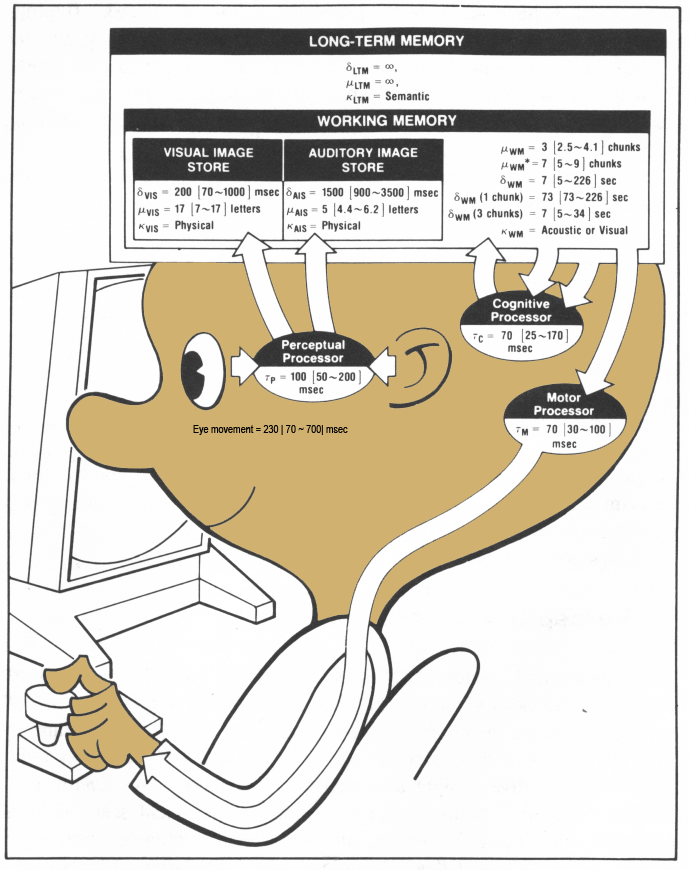
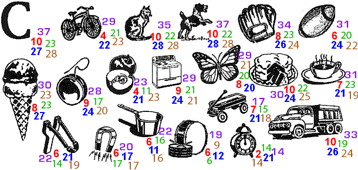
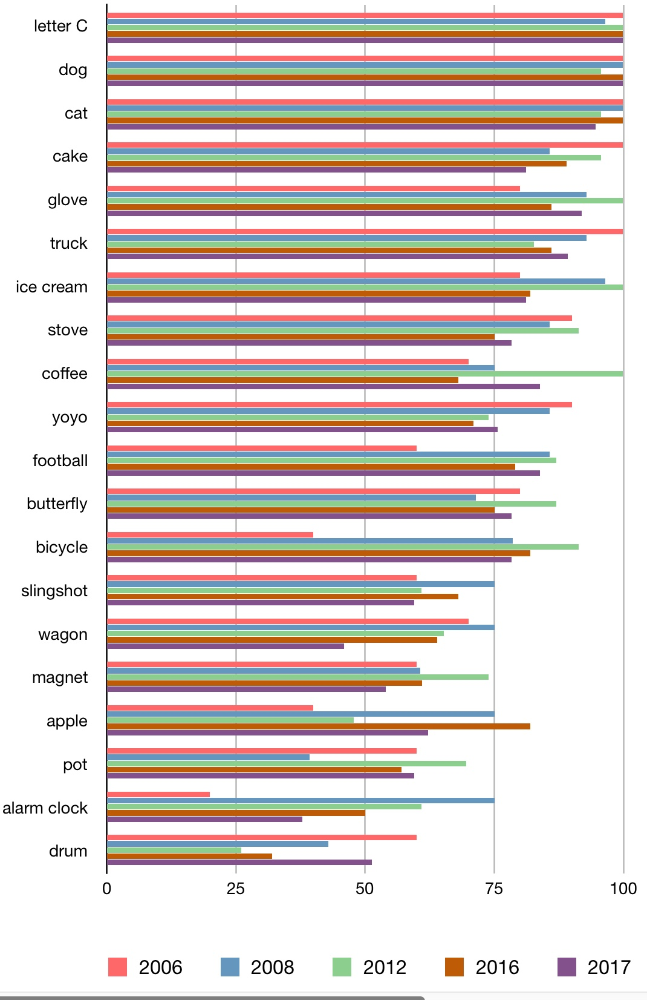
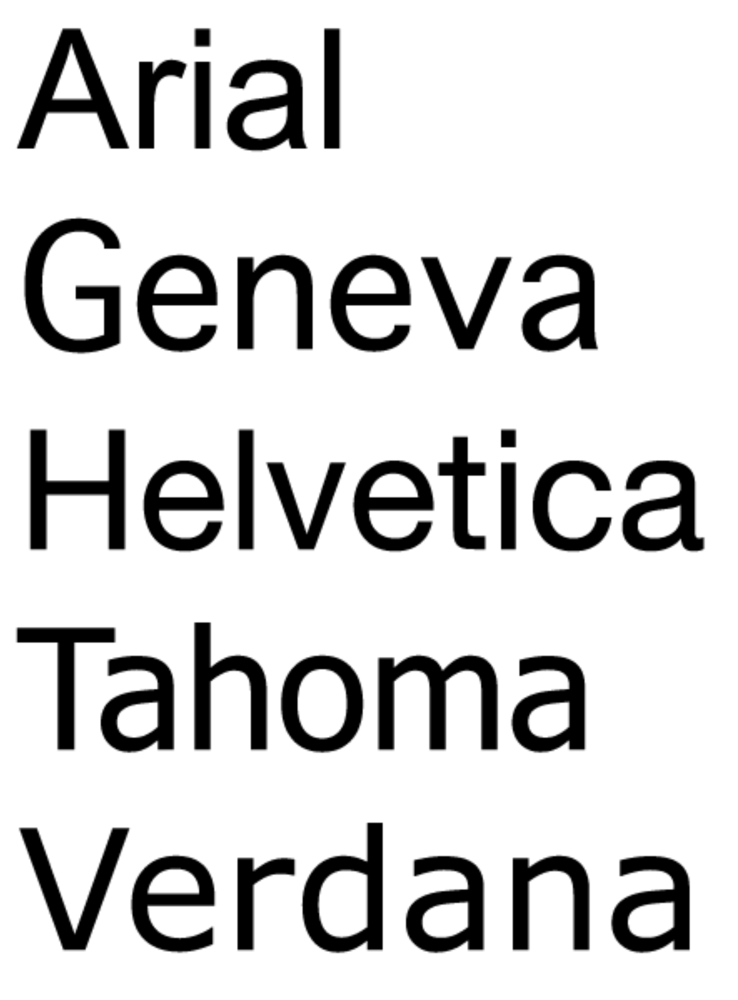
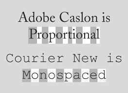
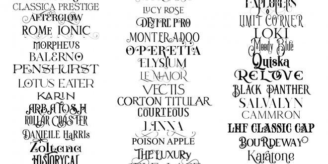
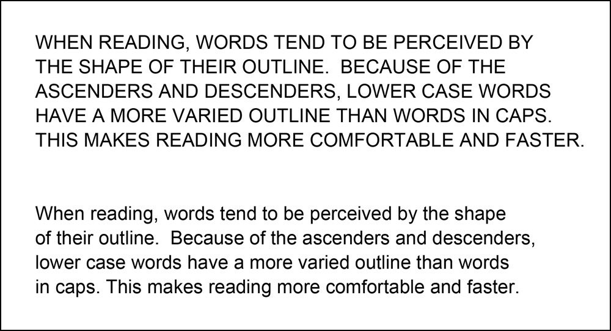

approximation
that allows us to make some predictions

wikipedia version -
https://en.wikipedia.org/wiki/Human_processor_model
Model Human
Processor- p26 of The Psychology of Human-Computer Interaction
mu: Storage capacity in terms
delta: decay time of an item
kappa: main code type
tau: cycle time
For a simple
perceive / decide / respond (perception / cognition / motor
response) it takes roughly 240ms (100 + 70 + 70) though the range
is 105-470 ms
In the normal way people think and work, things aren't really so
isolated, but as a model it can give you a general sense of our
capabilities
Here is what the results look like from my last four HCI
classes

Comparing the
last five classes:

A bit more on
text. You have several general choices of font styles to use
sans-serif (e.g. Helvetica, Arial, Verdana, Tahoma) good for
on-screen text - e.g. 72 dpi

serif (common Sans Serif typefaces include Arial, Helvetica and Tahoma) - good for printed text - e.g.
150-300 dpi. As screen resolutions increase serif fonts become
more appropriate.
monospace - good for certain occasions when you need exact
alignment of the text

fantasy / cute / brush strokes / cursive / dripping blood -
just say no, unless you are creating a party invitation

One font, comic
sans, deserves some mention on its own. Here is one good link (with profanity) about
comic sans. In the summer of 2011 there were quite a few blog
posts devoted to a 100 page US Army PowerPoint presentation using
comic sans e.g. this one.
Scientists do this kind of thing as well. How long does it take
for you to read the title screen here?
You
should start with a sans-serif font (like Helvetica) and only change
it if you have a very good reason.
lower
case words are read faster than words in upper case

Individual
letters and nonsense words (such as UA1416 or CS 5331) are read faster in upper case
Reading test
O lny srmat
poelpe can raed tihs. I cdnuolt
blveiee taht I cluod aulaclty uesdnatnrd waht I was rdanieg. The
phaonmneal pweor of the hmuan mnid, aoccdrnig to a rscheearch at
Cmabrigde Uinervtisy, it deosn't mttaer in waht oredr the ltteers
in a wrod are, t he olny iprmoatnt tihng is taht the frist and
lsat ltteer be in the rgh it pclae. The rset can be a taotl mses
and you can sitll raed it wouthit a porbelm. Tihs is bcuseae the
huamn mnid deos not raed ervey lteter by istlef, but the wrod as a
wlohe. Amzanig huh? yaeh and I awlyas tghuhot slpeling was
ipmorantt! if you can raed tihs psas it on !!" Can the computer read this text?
How human interact with computers in the future with the supports of modern technologies?
Corning - 2011 - A day made
of glass
Microsoft - 2015 - Future
Vision 2020
In project 1, we dealt with
windows, icons, dialogue boxes, and menus. Here are some general rules which should help with the
projects before we revisit these again in detail (principles for designing these in more
detail)
windows
give
the user the ability to see multiple pieces of information at the
same time
use a grid structure for window contents
group related elements, separate unrelated elements
provide an initial focus for the viewer's attention
direct attention to important items
minimize clutter so critical information is not hidden
icons
exploit user's knowledge of the world - familiarity (such as trash can icon)
respect established conventions
exaggerate - trash can = destroy
provide contrast - selected vs. unselected items
make distinctive features prominent
make the icon readable at a glance
make the icon appealing
Imagine you
have only a 32 x 32 or 128 x 128 pixel grid to display that icon.
icon sizes have
become much, much larger for desktop computers, laptops, and
tablets - but devices such as watches, google glass have smaller displays.
menus are lists
of verbs, nouns, adjectives and adverbs
menus
group menu items according to easily recognizable logical
relations to make them more easily learned
group menu items to be clearly distinguishable perceptually
position most likely selections given the current context for
easy access
left justify all textual menu items
capitalize only initial letters of items
separate groups, icons and hotkey codes
For Tree structured menus
use consistent and concise phrasing
use familiar terminology
create groups of logically similar items
form groups that cover all possibilities
make sure menu items are non-overlapping
Order items in an appropriate way
alphabetical
numerical (time, ascending, descending)
most frequently used first
dialogue boxes are 2D layouts of verbs, nouns, adjectives
and adverbs
dialogue boxes
make the most frequently used controls easy to locate and
manipulate
spatial order of controls should reflect the typical
interaction sequences
establish a clear context for each dialogue box with prominent
and consistently located titles
highlight the default options
What do we do?
analyze the contents
create a conceptual diagram
sort the area into information zones
set up a layout grid
tell a story visually
use color with discretion
let the typography tell the story
minimize variation in lengths and widths
make any instructions clear
leave enough space for data entry
use a short clear title
evaluate design with users
When asking the user to enter data, try to help by making the
expected format obvious in the form
telephone numbers
date
time of the day
currency
Of course this
is tricky because all of these things are culturally dependent
Source: User Interface Design by Andrew Johnson Designing the User Interface by Schneiderman, SIGGRAPH 96
course notes #12 - Graphic Design for Usable GUIs Some images are retrieved from online resources